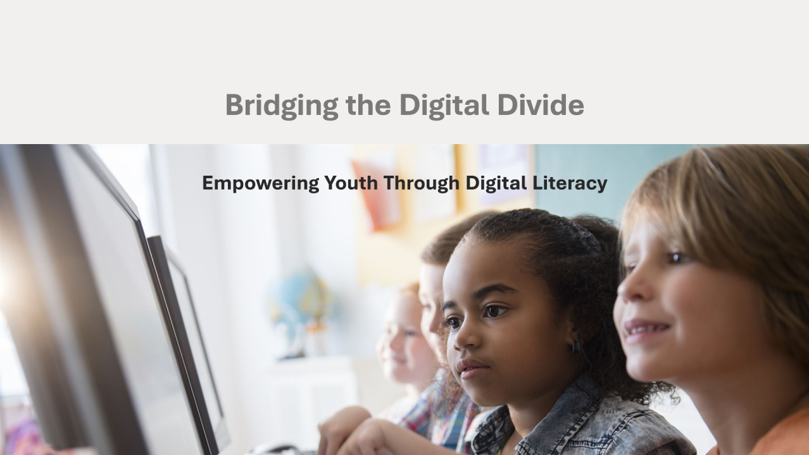
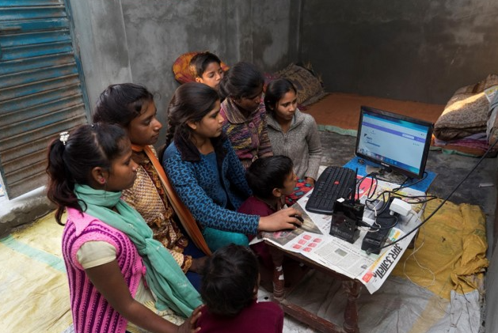

Our Initiatives
We organize digital literacy workshops, provide free online resources, and advocate for policy changes that support digital access.
- At Digital Access for All, we are dedicated to bridging the digital divide by empowering communities with the tools and skills they need to thrive in a connected world. Our initiatives focus on digital literacy, accessibility, and technology inclusion to ensure that everyone, regardless of background, has the opportunity to participate in the digital age.
- We also run a Device Donation Program, collecting and refurbishing used laptops, tablets, and smartphones to distribute to underserved communities. Many individuals lack access to the necessary technology for education and work, and through this initiative, we help close that gap.
- Our Youth Mentorship Program provides guidance and training for young individuals interested in pursuing careers in technology. From coding boot camps to career coaching, we offer support to help them develop skills and gain confidence in the digital field.
- Advocacy is also a key part of our mission. Through our Accessibility and Inclusion Efforts, we work with policymakers, businesses, and educational institutions to push for more inclusive digital policies. This includes ensuring that online platforms are accessible to individuals with disabilities and promoting the development of assistive technologies.

